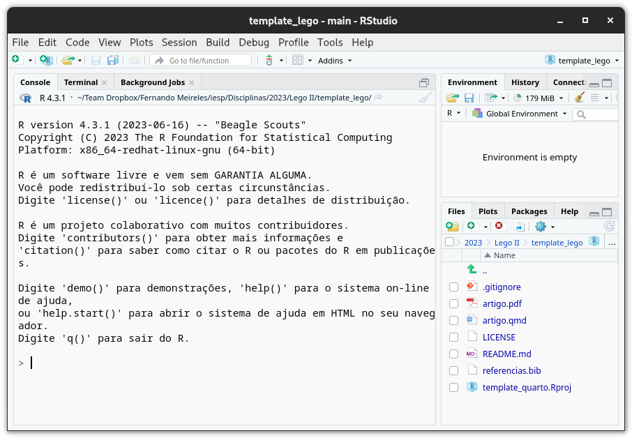

Template
Template de Lego I
Neste curso, usaremos um template em quarto para realizar listas de exercícios e trabalho final. Diferentemente de um arquivo de Word, este template pode ser editado em qualquer editor de texto usando Markdown; e ele também dispensa termos de usar normas da ABNT; de inserir bibligrafia manualmente; ou de ter de copiar e colar resultados de análises feitas no R. Usando ele, em outras palavras, podemos nos concentrar apenas em escrever e analisar dados.
Download
O template pode ser baixado daqui ou deste repositório do GitHub. Extraia os arquivos para uma pasta da sua preferência. Para abrir o template no RStudio, abra o arquivo template_quarto.Rproj. Se tudo funcionar, seu projeto será aberto e você deverá ver algo mais ou menos assim:

Instalação
Para usar o template, é necessário ter o R e o quarto instalados, o que podemos fazer seguindo três passos simples.
1) Instalando o quarto
Para instalar especificamente o quarto, busque a versão adequada para o seu sistema operacional em:
2) Instalando o tinytex e LaTex
Feito isso, precisamos instalar o tinytex, que é uma distribuição \(\LaTeX\) leve e fácil de instalar, rodando o seguinte código diretamente do R:
install.packages("tinytex")
tinytex::install_tinytex()3) Instalando o quarto para R
Com a etapa anterior concluída, instale o pacote quarto para R com:
install.packages("quarto")Usando o template de Lego
Para usar o template de Lego em listas de exercícios ou trabalhos, basta abrir o arquivo documento.qmd de dentro RStudio, editar seu conteúdo como quiser e clicar no botão Render. O arquivo documento.pdf será gerado.
Também é possível compilar o arquivo executando o seguinte código em R:
quarto::render("documento.qmd")Dicas de uso
Markdown
Títulos e sub-títulos são definidos com # e ##, respectivamente. Por exemplo, # Título gera um título, e ## Sub-título gera um sub-título. Para criar uma lista, use - ou * no início de cada item. Exemplo:
- Item 1
- Item 2Para criar um parágrafo, basta deixar uma linha em branco entre os parágrafos. Para criar uma citação, use >. Exemplo:
Citação qualquer…
Para destacar um texto com itálito, use *texto*; para negrito, use **texto**; e para negrito e itálico, use ***texto***. Finalmente, links podem ser criados com [texto](url).
Código em R
Podemos inserir código bruto em R e o template o compilará e o exibirá no documento final. Por exemplo, o código abaixo gerará um gráfico:
x <- 1:10
y <- x^2
plot(x, y)Para inserir código, bastar usar três crases seguidas de r, e depois do código três crases novamente. Exemplo:
```{r}
plot(x, y)
```Citações
- Para inserir uma citação, use
@seguido do nome do código da referência como definido no arquivoreferencias.bib. Por exemplo,@ross2001doescitará Ross (2001), e[@ross2001does]citará (Ross 2001). Para inserir várias citações, separe elas por;. Por exemplo,[@ross2001does; @cunningham2021causal].
Notação
Podemos inserir notação matemática usando \(\LaTeX\). Para inserir um símbolo, use $ seguido do código \(\LaTeX\) e $ novamente. Por exemplo, $\beta$ gerará \(\beta\).
Notações que usaremos bastante no curso:
- \(\beta\) (beta):
$\beta$ - \(\beta_i\) (beta sub i):
$\beta_i$ - \(\alpha\) (alfa):
$\alpha$ - \(\sim\) (sim):
$\sim$ - \(\hat{\beta}\) (beta chapéu):
$\hat{\beta}$ - \(\sum_{i=1}^n\) (somatório):
$\sum_{i=1}^n$ - \(\mathbb{E}[X]\) (valor esperado):
$\mathbb{E}[X]$